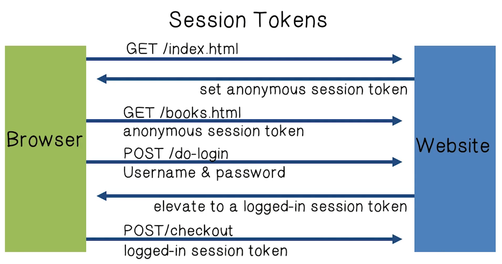

NetSec Lecture Notes - Lesson 6 - Web Session Management
Web Session Management
Sessions
- Session is a sequence of requests and responses from one browser to one (or more) sites
- Session can be long (e.g. Gmail) or short
- Without session management, users would constantly re-authenticate
- Session management: authorize user once; all subsequent requests are tied to user
Use Session Tokens

### Storing Session Tokens
- Browser cookie:
- Set-Cookie: SessionToken=loremipsum
- Problem is that a browser can send cookie with every request, even when it’s not valid. Gives rise to CSRF attacks.
- Embed in all URL links:
https://site.com/checkout?SessionToken=loremipsum- If application is not secure or user posts a link somewhere, can leak tokens
- In a hidden form field
*
<input type="hidden" name="sessionid" value="loremipsum"* Downside is that every user action must result in submission of a form or you lose the token - Best method is a combination of all 3
- Browser cookie, embed in URL, hidden form field
HTTP Referer Header
- Shows the page you are coming from - your referer
- Problem
- Referer leaks URL session token to 3rd parties
- Solution: referer suppression
- Referer header not sent when HTTP site refers to an HTTP site in HTML5
a rel="noreferrer" href=www.example.com
- Referer header not sent when HTTP site refers to an HTTP site in HTML5
Session token Security - Logout Procedure
- Web sites must provide alogout function
- Let user login as a different user
- Prevent others from abusing content
- What happens during logout?
- Delete SessionToken from client
- Mark session token as expired on server
- Problem: Many websites do the first but not the second
- Especially risky for sites who fall back to HTTP after login
Session Token Quiz
- The token must be stored somewhere
- True
- Tokens expire, but there should still be mechanisms to revoke them if necessary
- True
- Token size, like cookie size, is not a conern
- False
Session Hijacking
- A major threat in web security.
- Attacker waits for user to login, then sniffs the packets and steals the session token
Beware of predictable tokens
- Example 1: Incremented Counter
- User logs in, gets counter value, can increment to view sessions of other users
- Example 2: Weak MAC token
- Weak MAC exposes secret key from a few cookies, gets counter value, can view sessions of other users
- Weak crypto bad
- There are APIs and libraries for doing this properly
Session Token Theft
- Even if a token is randomly generated, still risk in having a live token stolen
- Example 1: Login over HTTPS, but subsequent HTTP
- Enables cookie theft at wireless cafe (e.g. Firesheep)
- Other ways network attacher can steal token:
- Token sent over HTTP
- Man in the middle attacks on SSL
- Example 2: Cross Site Scripting exploits
- Amplified by poor logout procedures
- Logout must invalidate token on server
- Amplified by poor logout procedures
- Mitigations
- Binding SessionToken to client’s computer
- A common idea: embed machine specific data in sessionID
- Don’t use IDs that can change, like userAgent or IP. Frankly, there really isn’t a good value to use.
- Better to just use random token
- A common idea: embed machine specific data in sessionID
- Binding SessionToken to client’s computer
Session Fixation Attacks
- Suppose attacker can set the user’s session toke
- For URL token, trick user into clicking URL
- For cookie tokens, set using XSS exploits
- Example:
- Attacker gets anonymous session token for site.com
- Sends URL to user with attacker’s session token
- User clicks on URL and logs into site.com
- This elevates attacker’s token to logged-in token
- Attacker uses elevated token to hijack user’s session
- Mitigation
- When elevating user from anonymous to logged-in always issue a new session token
- After login, token changes to value unknown to attacker. Attacker’s token is not elevated.
- When elevating user from anonymous to logged-in always issue a new session token
Session Hijacking Quiz
- Active session hijacking involves disconnecting the user from the server once that user is logged on. Social engineering is required to perform this type of hijacking
- True
- In passive session hijacking the attacker silently captures the credentials of a user. Social engineering is required to perform this type of hijacking
- False
- Social engineering is not required
Summary
- Always assume cookie data retrieved from client is adversarial
- Session tokens are split across multiple client state mechanisms
- Cookies, hidden form fields, URL parameters
- Cookies by themselves are insecure (CSRF, cookie overwrite)
- Session tokens must be unpredictable and resist theft
- Ensure logout invalidates session on server